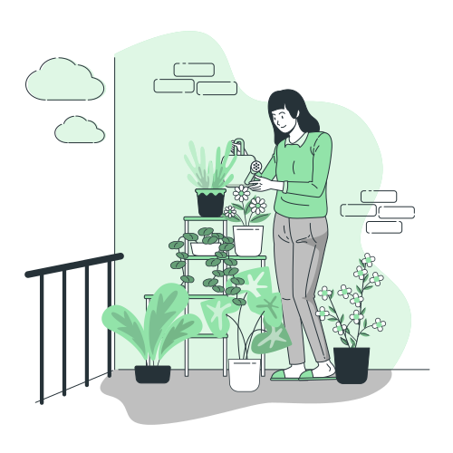

We specialize in cultivating cut flowers, delivering them to florists in Srinagar and beyond, perfect for weddings and
special events. We also provide ready-made bouquets and bunches, as well as flower plants, seeds, and bulbs.
Aromatics
From the soothing essence of lavender and rosemary to the timeless allure of rose and geranium. Immerse yourself in the
artistry and craftsmanship of essential oils, dried flower buds, and the delicate beauty of aromatic hydrosols.

Nursery
From vibrant flowers and plants to fruit-bearing wonders like High-Density apples, apricots, peaches, plums, and kiwi.
Elevate your garden experience with our quality plants, seeds, bulbs, and saplings, bringing nature’s abundance to your
doorstep.
About Us
At United Floritech, we're more than just purveyors of flowers and essential oils; we're cultivators of
nature's essence and beauty. Nestled in the heart of fertile lands, we've dedicated ourselves to the art of nurturing,
harvesting, and sharing the wonders of botanical treasures for generations.
TALK TO US
Have any questions? We are always open to talk about your business!